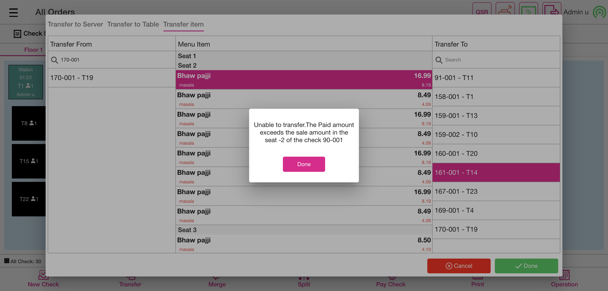
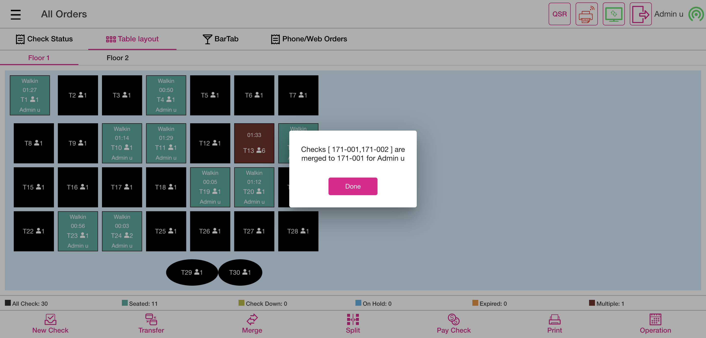
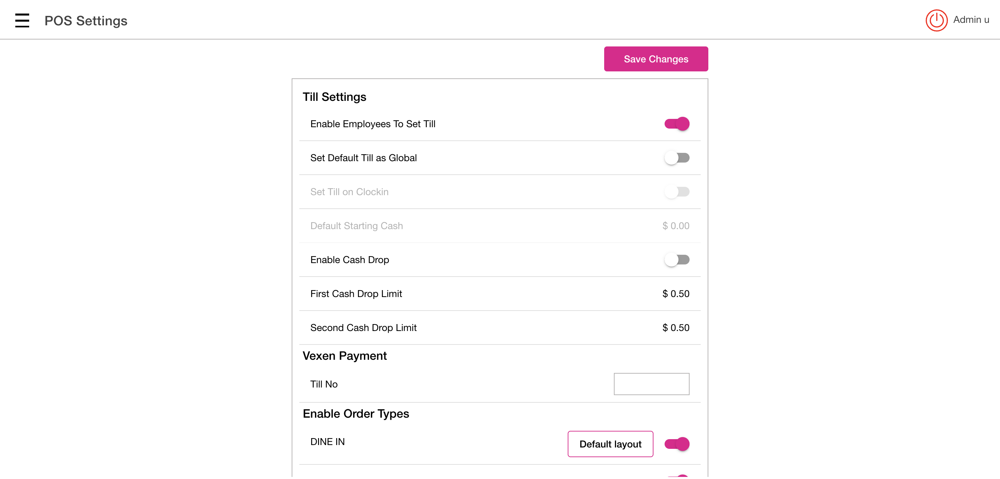

-
Ask Seat Number Feature
1:38:25 pm / 00:10:10:950 Fail
Ask Seat Number Feature
01.23.2024 1:38:25 pm 01.23.2024 1:48:36 pm 00:10:10:950 · #test-id=1FailVerify the transferGiven I'm logged inAnd I closed the order type windowAnd I click AllAnd I click Table Layout tabAnd I select the random table from the table layoutAnd I select Menu of Basic validation for QSR as "Menu"And I click Finish Order buttonAnd I click Table Layout tabAnd User select the Transfer buttonAnd User verify Transfer to Server, Transfer to Table and Transfer Item are displayedAnd User select the Transfer Item OptionWhen I select check for transferredAnd Select the required menu item from the Menu Item TableWhen I select check for transferred1And Click the Done buttonAnd Verify the Successful message of Transfer Item OneAnd I click Done button on the PopupStep skippedWhen I click transferred table after done transfer processStep skippedThen Verify the Transferred menu item is available or not in the receiving tableStep skippedAnd Click the finish buttonStep skippedAnd I click power button in the All Orders screenStep skippedcom.qa.stepdef.Hooks.quit(io.cucumber.java.Scenario)screenshotFailVerify the mergeGiven I'm logged inAnd I closed the order type windowAnd I click AllAnd I click Table Layout tabAnd I select Menu for DineIn as "North Indian dish" for split seat order screen for mergeAnd I get the seat number from the checkAnd I get the list of the menu from the order screenAnd I get value the menu values from order screenAnd I click Finish buttonAnd I click Table Layout tabAnd I select Menu for DineIn as "North Indian dish" for split seat order screen1And I get the seat number from the check1And I get the list of the menu from the order screen1And I get value the menu values from order screen1And I click Finish buttonAnd I click Table Layout tabAnd I click Merge buttonWhen I click the check from the table layout for mergedWhen I click the check from the table layout for merged1And I click Done button on the pop-up to complete mergingThen I should see the merged popup after mergeAnd I click Done button on the PopupStep skippedWhen I click the check from the table layout for mergedStep skippedThen I Should get back to the Order ScreenStep skippedAnd I verify check number from the order screenStep skippedWhen I verify the seat number from the order screenStep skippedAnd I select seat oneStep skippedWhen I verify the seat 1 order screen menu with 1st check menuStep skippedAnd I select seat twoStep skippedWhen I verify the seat 2 order screen menu with 2nd check menuStep skippedAnd I click table number on the order screenStep skippedWhen I verify the menu prize after merge doneStep skippedAnd I click Cash button for Complete SaleStep skippedAnd I click Exact button on the cash pop-upStep skippedAnd I click Enter Button on the cash pop-upStep skippedAnd I click Table Layout tabStep skippedAnd I click power button in the All Orders screenStep skippedcom.qa.stepdef.Hooks.quit(io.cucumber.java.Scenario)screenshotFailDisable the "Ask Seat count in Table Layout" new toggle in Pos settings under DINE INGiven I'm logged inAnd I closed the order type windowAnd I click the Settings buttonAnd I click the POS settings from ToggleAnd I verify that ask seat count toggle is disabledAnd I click power button in operationStep skippedcom.qa.stepdef.Hooks.quit(io.cucumber.java.Scenario)screenshotPassVerify the multi seats After disabling ask Seat Count in Table LayoutGiven I'm logged inAnd I closed the order type windowAnd I click AllAnd I click Table Layout tabAnd I select random table on the table layoutAnd I select the number of seats as "1"And I tap Continue to finish selecting the number of seatsThen I Should get back to the Order ScreenWhen I verify the seat count on the order screen as "1"And I get check numberAnd I select category as "FOOD"And I select menu item as "Chicken Schnitzel"And I add a new seatThen I should see created new seatAnd I select seat twoAnd I select category as "FOOD"And I select menu1 item as "Onion Rings"And I add a new seatAnd I select seat threeAnd I select category as "FOOD"And I select menu two item as "Chicken Schnitzel"And I select seat oneAnd I verify menu item on the order screenAnd I select seat twoAnd I verify menu1 item on the order screenAnd I select seat threeAnd I verify menu two item on the order screenAnd I click Finish Order buttonAnd I click Table Layout tabAnd I click power button in the All Orders screenPassDisable Ask Customer - Verify the multi floor'sGiven I'm logged inAnd I closed the order type windowAnd I click AllAnd I click Table Layout tabAnd I click right symbolThen I should see next floorAnd I select random table on the table layoutAnd I select the number of seats as "1"And I tap Continue to finish selecting the number of seatsThen I Should get back to the Order ScreenWhen I verify the seat count on the order screen as "1"And I get check numberAnd I select category as "FOOD"And I select menu item as "Chicken Schnitzel"And I add a new seatThen I should see created new seatAnd I select seat twoAnd I select category as "FOOD"And I select menu item as "Onion Rings"And I click Finish Order buttonAnd I click Table Layout tabAnd I click power button in the All Orders screen
-
org.openqa.selenium.NoSuchElementException
3 tests
org.openqa.selenium.NoSuchElementException
3 failedStatus Timestamp TestName Fail 13:40:18 pm And Verify the Successful message of Transfer Item One Ask Seat Number Feature.Verify the transfer.And Verify the Successful message of Transfer Item OneFail 13:44:13 pm Then I should see the merged popup after merge Ask Seat Number Feature.Verify the merge.Then I should see the merged popup after mergeFail 13:45:39 pm And I verify that ask seat count toggle is disabled Ask Seat Number Feature.Disable the "Ask Seat count in Table Layout" new toggle in Pos settings under DINE IN.And I verify that ask seat count toggle is disabled
-
@AskSeatCount018
5 tests
@AskSeatCount018
2 passed 3 failedStatus Timestamp TestName Fail 13:38:25 pm Verify the transfer Ask Seat Number Feature.Verify the transferFail 13:40:27 pm Verify the merge Ask Seat Number Feature.Verify the mergeFail 13:44:29 pm Disable the "Ask Seat count in Table Layout" new toggle in Pos settings under DINE IN Ask Seat Number Feature.Disable the "Ask Seat count in Table Layout" new toggle in Pos settings under DINE INPass 13:45:49 pm Verify the multi seats After disabling ask Seat Count in Table Layout Ask Seat Number Feature.Verify the multi seats After disabling ask Seat Count in Table LayoutPass 13:47:51 pm Disable Ask Customer - Verify the multi floor's Ask Seat Number Feature.Disable Ask Customer - Verify the multi floor's
Started
Jan 23, 2024 01:38:23 pm
Ended
Jan 23, 2024 01:48:36 pm
Features Passed
0
Features Failed
1
Features
Scenarios
Steps
Timeline
Tags
| Name | Passed | Failed | Skipped | Others | Passed % |
|---|---|---|---|---|---|
| @AskSeatCount018 | 2 | 3 | 0 | 0 | 40% |